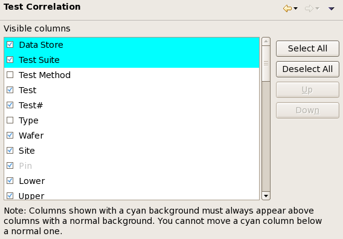

Test Correlation preference settings
The Test Correlation preference page lets you configure which columns are displayed in which order in test summary tabs that display summary views of correlated data stores.

The list contains all available columns. Columns that are checked in the list are visible in the test summary tabs when they display correlation data stores. Columns displayed in gray cannot be deselected. Columns with a cyan background cannot be moved below columns with a white background.
The order of the columns in the list is also the order in which the columns appear in the view. It can be changed with the Up and Down buttons. Columns with a cyan background cannot be moved below columns with a white background.
For a description of the available columns, see Test summary tab and Correlation data store structure.
A number of buttons let you configure the columns
- Select All: Check all columns, meaning that all available columns will be displayed in the view.
- Deselect All: Uncheck all columns (except those that cannot be deselected), meaning that none of them will be displayed in the view.
- Up: Moves the selected columns one spot higher in the list. (A column is selected by clicking its name.) You cannot move a column with a white background higher than a column with a cyan background.
- Down: Moves the selected columns one spot lower in the list. You cannot move a column with a cyan background lower than a column with a white background.
Functional changes
- Introduced in SmarTest 7.2.0
- SmarTest 7.2.1: Renamed some columns.